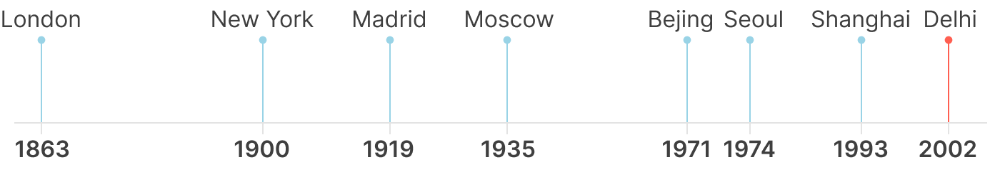
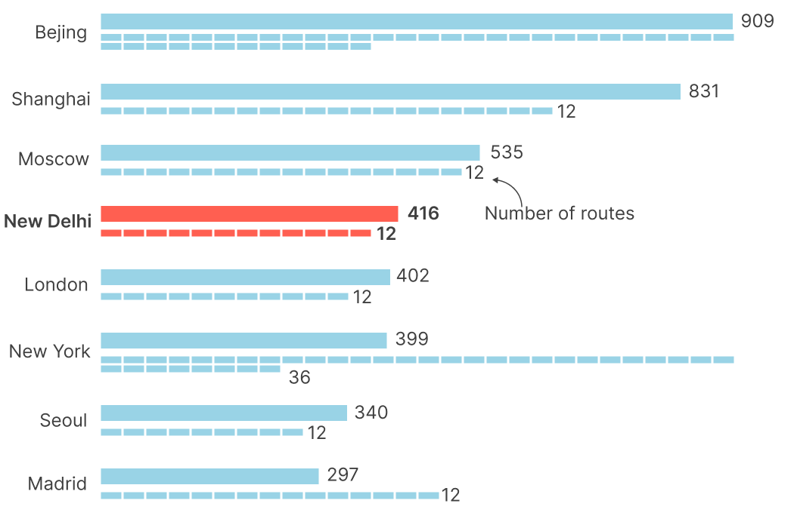
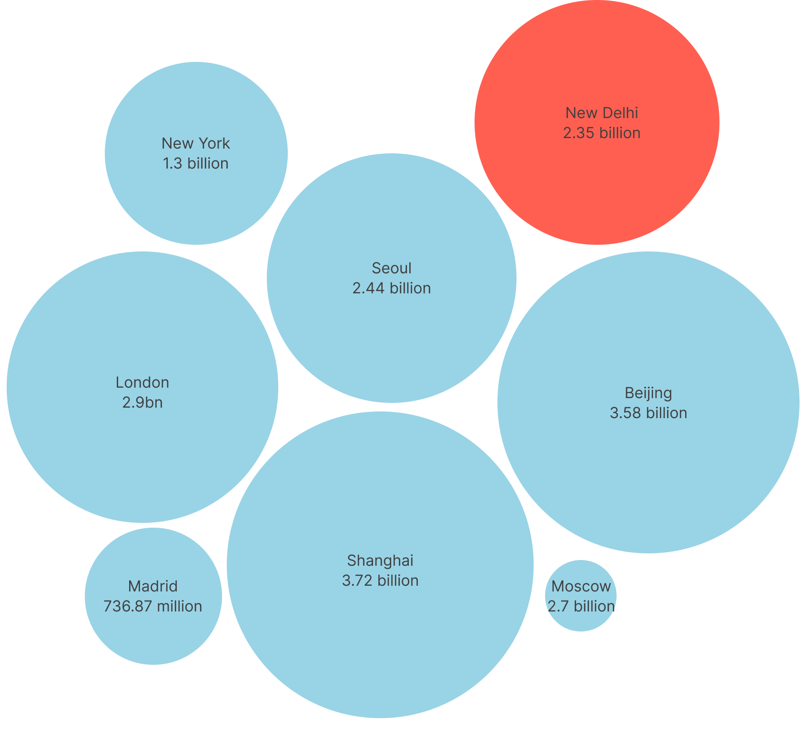

From a single line in 2002 to one of the world's largest metro systems.
When the Delhi Metro started in 2002, it consisted of a single line and a handful of stations. Today, it is one of the largest metro systems in the world, carrying millions of passengers every day and connecting neighborhoods that once felt hours apart.
This project explores the growth of the Delhi Metro-from its first stations to the network that now spans the National Capital Region. It traces how the system expanded, how it changed access across the city, and where it is headed next.
Delhi grew really fast
Delhi has always been a city of movement. As its population grew through the 1980s and 1990s, so did the number of vehicles on its roads. Longer commutes, traffic congestion, and air pollution became everyday challenges.
Building wider roads could only solve part of the problem. The city needed a high-capacity public transport system that could move large numbers of people quickly and reliably, without depending on road traffic.
The Delhi Metro was envisioned as that solution.
Phase IV and V (Current and Upcoming Expansion)
Phase IV (Ongoing): Will add about 112 km across multiple new and extended corridors (such as Aerocity-Tughlaqabad). Phase V: Features Phase V(A) and V(B) approvals to link central areas, the Central Vista, and outer suburban pockets like Narela and Najafgarh with new high-density corridors
Delhi vs the world
Some networks are older, some are larger, and some carry more passengers. Delhi's network is relatively young, yet it has expanded at an exceptional pace.
Talk about how Delhi metro has made it to one of largest metro system in the world.
Source: Aljajeera/ Arthur Thouret
Delhi metro was established most recently among the top largest metro systems of the world

Source: Metroworld • Made with Figma
The Delhi Metro is one of the world's youngest large metro systems, opening in 2002. Despite its relatively recent beginnings, it has expanded at a remarkable pace, matching the scale of networks that have been developing for over a century.
Delhi metro is the 4th longest metro systems of the world (in km)

Source: metroworld • Made with Figma
Everyone has a favourite mango, but that favourite usually depends on where you grew up. The mangoes you ate as a child often become the benchmark for every mango that follows.
Annual Ridership for 2024-25

Source: Firstpost • Made with Flourish and Adobe Illustrator
Some metro systems are longer, while others carry more people. Annual ridership provides a useful way to compare how intensively different networks are used.
Delhi Metro Still Growing
The Delhi Metro continues to evolve. New lines, extensions, and stations are under construction, expanding the network to serve new neighborhoods and accommodate a growing population.